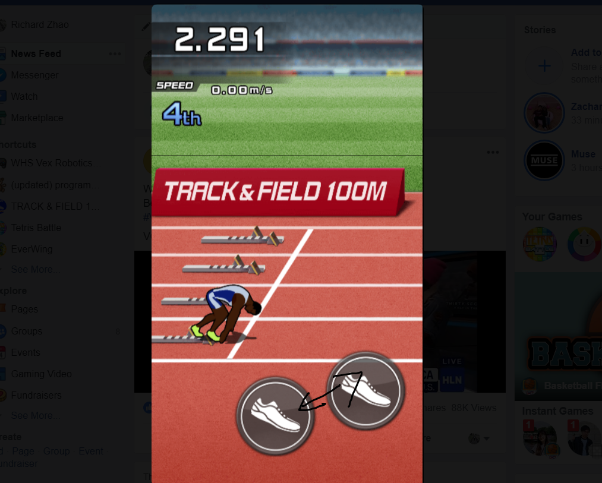
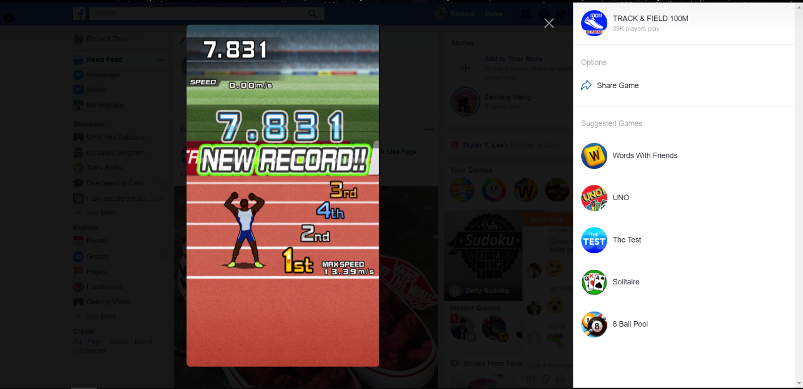

About 2 years ago, pretty much all of my messenger chats were spammed with people playing games. And everyone of my friends took these games seriously; Endless Lake was serious business and I made it a point to fight for #1 in all of my chats. I was still premed at the time and didn't really code, so I played everything by hand. Path of Exile's recent bot-ban wave led me to investigate more into their capabilities, and I was shocked to discover how many of them were actually technically simple and not that complex in nature, yet were able to accomplish much playing the actual game. At the same time, one of my friends revived an old game in which I thought I had secured my spot as #1. I didn't feel like actually playing, so I wanted to use the nuclear option -- using a bot, which is honestly just cheating but I didn't care.
One of my friends from college already made a bot for the Facebook game "Everwing," so I took a look at his source code. I wanted to start small and work with games that were static and had very consistent gameplay and build up from there to more dynamic games, and honestly Track and Field 100m is about as simple as it gets.
I thought Track and Field 100m was a perfect way to ease my way into building bots. I'm technically inept so I don't like working with low level code, nor am I interested in reading bytecode ever again or whatever technique Runescape bot makers use to directly get the game state, so I decided to use "computer vision". (if you can consider it that) I used pyautogui to mimic keyboard and mouse events and Pillow for taking screenshots. I originally also used pyautogui for image processing, but I found that it's locate function was too slow so I ended up switching to OpenCV and used template matching instead.
The game is pretty simple-- either hit z and x or drag your mouse between the two buttons to run. Hitting z and x would probably be simpler (it'd be like 2 lines of code) but I wanted to practice using mouse events and image recognition for more complex tasks in the future.
The code was ridiculously simple; start dragging between the two buttons after seeing the "go" label. To make location faster, I reduced the search boundary.
The fastest speed I've gotten was 7.8 seconds. I would also like to add that I promptly put every chat in the dumpster with this time.
Source code available here.
